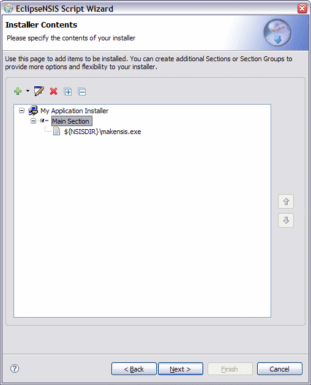
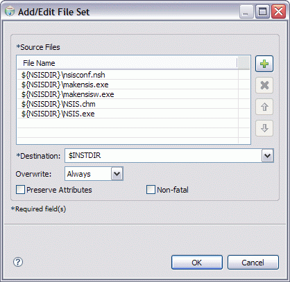
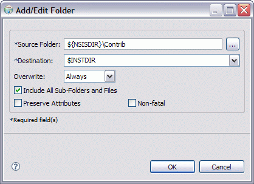
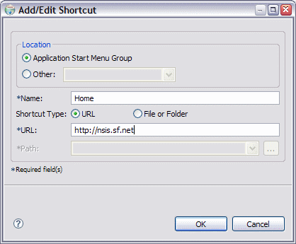
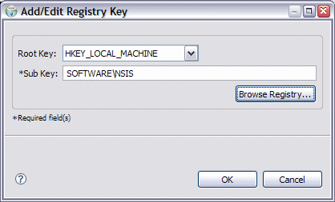
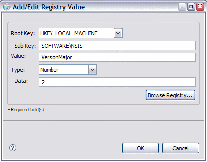
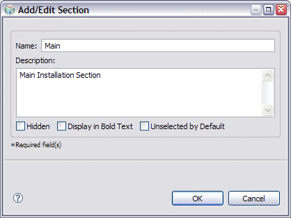
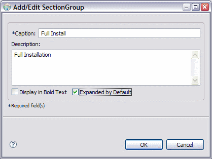

Script Wizard
Installer Contents
This page is used to manage installer contents. This consists of one or more of the following items:
These items can be added, edited or deleted using the supplied toolbar. The toolbar popups change depending upon the type of item which is currently selected. The toolbar functions can also be accessed as a context menu by right-clicking on an item in the tree. The installer contents are installed in the sequence in which they are shown in the tree.

- Installer Contents
- A visual representation of the installer contents in a tree format. ← Back
- Add
- Add an installation item, Section or SectionGroup/SubSection. ← Back
- Edit
- Edit the currently selected item. ← Back
- Delete
- Delete the currently selected item. ← Back
- Expand All
- Expand all nodes in the tree. ← Back
- Collapse All
- Collapse all nodes in the tree. ← Back
- Move Up
- Move the selected items higher up in the installation sequence. ← Back
- Move Down
- Move the selected items lower down in the installation sequence. ← Back
Installer Items
The various installer items and the dialogs used to add and edit them are described in this section.
File
This consists of a single file on the filesystem.

- Source File
- The source file name. ← Back
- Destination
- The installation destination folder. ← Back
- Overwrite
- The overwrite action to take if the file already exists on the installation filesystem. ← Back
File Set
This consists of a set of files on the filesystem which will be installed in the same destination folder.

- Source Files
- The source file names. These can be from different locations. ← Back
- Add
- Add one or more source files by browsing the filesystem. ← Back
- Delete
- Delete the selected source file(s) from the installer. ← Back
- Up
- Move the selected file(s) higher in the installation sequence. ← Back
- Down
- Move the selected file(s) loweer in the installation sequence. ← Back
- Destination
- The installation destination folder. ← Back
- Overwrite
- The overwrite action to take if any of the files already exists on the installation filesystem. ← Back
Folder
This consists of a single folder on the filesystem. It can, however, be installed recursively, i.e., all its sub-folders and files will be installed as well.

- Source Folder
- The source folder name. ← Back
- Destination
- The installation destination folder. ← Back
- Overwrite
- The overwrite action to take if the folder, or any of its children, already exist on the installation filesystem. ← Back
- Include All Sub-Folders and Files
- Option to recursively install the folder. ← Back
Shortcut
This represents a shortcut to be created on the installation system. The shortcut can either to be a file on the installation system or a URL.

- Location
- The location on the installation system in which the shortcut will be created. ← Back
- Name
- The shortcut name. ← Back
- Shortcut Type
- The shortcut type- File or URL. ← Back
- URL
- The shortcut destination URL. This is enabled if the selected shortcut type is URL. ← Back
- Path
- The shortcut destination file. This is enabled if the selected shortcut type is File. ← Back
Registry Key
This represents a Windows registry key to be created on the installation system.

- Root Key
- The root key. This must be one of the root keys supplied by windows, e.g., HKEY_LOCAL_MACHINE, HKEY_CURRENT_USER, etc. ← Back
- Sub Key
- The name of the sub key which will be created. This can be a multi-level subkey, with its parts separated by a '\' character. ← Back
Registry Value
This represents a Windows registry value to be created on the installation system.

- Root Key
- The root key. This must be one of the root keys supplied by Windows, e.g., HKEY_LOCAL_MACHINE, HKEY_CURRENT_USER, etc. ← Back
- Sub Key
- The name of the sub key in which the registry value will be created. This can be a multi-level subkey, with its parts separated by a '\' character. If it does not exist it will be created. ← Back
- Value
- The name of the registry value which will be created. ← Back
- Type
- The registry value type. Currently string (REG_SZ) and numeric (REG_DWORD) value types are supported. ← Back
- Data
- The actual data to be written to the registry value. ← Back
Section
This represents a logical grouping of one or more files, folders, file sets, shortcuts, registry keys or registry values.

- Name
- The Section name. If this is left blank, the Section is automatically hidden. ← Back
- Description
- The Section description. ← Back
- Display in Bold Text
- Flag indicating whether the Section should be displayed in bold type. This is a useful way to attract the user's attention to a particular Section. ← Back
- Unselected by Default
- Flag indicating whether the Section should be unselected by default- i.e., the default behavior is NOT to install the Section contents. ← Back
SectionGroup/SubSection
This represents a logical grouping of one or more Sections or SectionGroups/SubSections. In NSIS versions prior to 2.05, SectionGroups are called SubSections.

- Caption
- The caption of the SectionGroup. ← Back
- Description
- The SectionGroup description. ← Back
- Display in Bold Text
- Flag indicating whether the SectionGroup should be displayed in bold type. This is a useful way to attract the user's attention to a particular SectionGroup. ← Back
- Expanded by Default
- Flag indicating whether the SectionGroup is expanded by default, i.e., its component Sections/SectionGroups are visible to the user. ← Back
Previous | Contents | Next
Copyright © 2004-2006 Sunil Kamath (IcemanK).